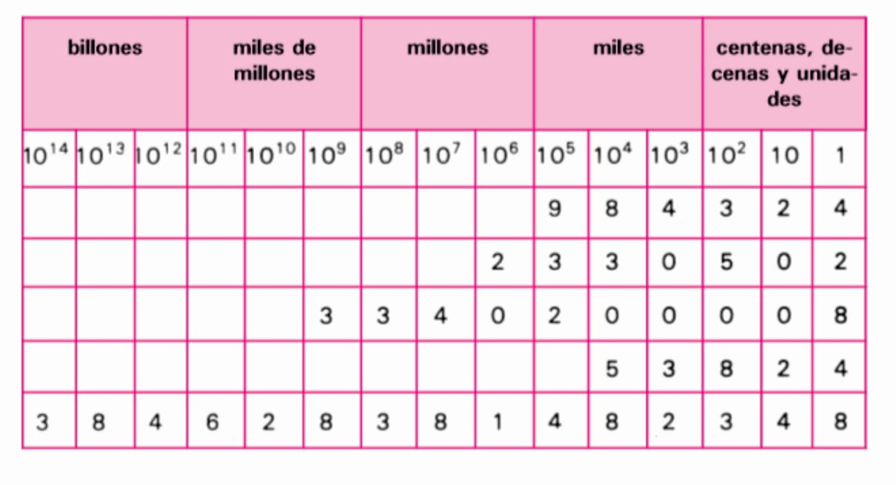
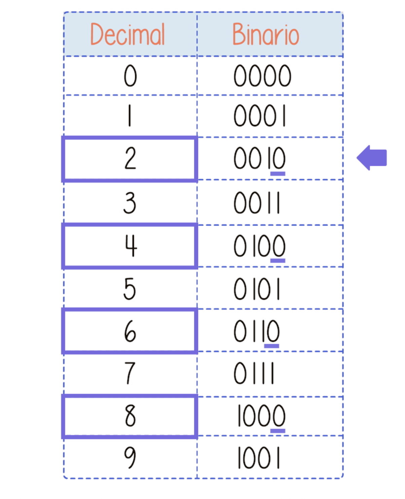
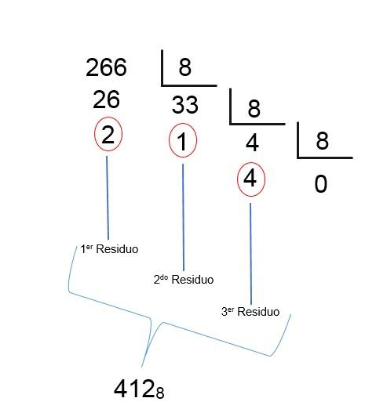
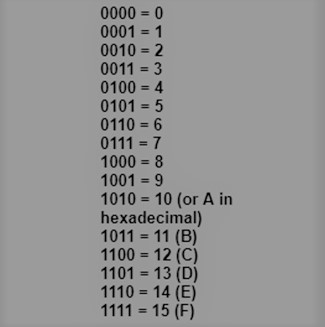

Los sistemas numéricos son sistemas de representación que utilizamos para expresar cantidades numéricas de manera estructurada y coherente. Estos sistemas están compuestos por un conjunto de símbolos y reglas que nos permiten representar números y realizar operaciones matemáticas.Cada sistema numérico se basa en una base o radix, que determina la cantidad de símbolos utilizados y cómo se representan los valores. El sistema decimal, por ejemplo, utiliza una base 10 y utiliza diez símbolos: 0, 1, 2, 3, 4, 5, 6, 7, 8 y 9.
La historia de los sistemas numéricos se remonta a miles de años atrás, cuando los seres humanos comenzaron a desarrollar métodos para contar y representar cantidades.
Los sistemas numéricos son fundamentales en el campo de la matemática y la computación. Su importancia radica en su capacidad para representar y manipular cantidades numéricas de manera eficiente y precisa. Los sistemas numéricos proporcionan las bases para realizar operaciones matemáticas, desarrollar algoritmos y programar computadoras. Además, su comprensión nos permite interpretar y comunicar información numérica de manera efectiva.
El sistema decimal es el sistema numérico más utilizado en nuestra vida cotidiana. Se basa en la base 10 y utiliza diez símbolos: 0, 1, 2, 3, 4, 5, 6, 7, 8 y 9. Cada posición en un número decimal tiene un valor según su posición, comenzando desde la derecha y multiplicando por potencias de diez. Por ejemplo, en el número 357, el 7 representa unidades, el 5 representa decenas y el 3 representa centenas.
El sistema binario es ampliamente utilizado en la electrónica y la informática. Se basa en la base 2 y utiliza dos símbolos: 0 y 1. Cada posición en un número binario tiene un valor según su posición, comenzando desde la derecha y multiplicando por potencias de dos. Por ejemplo, en el número binario 1010, el 0 representa unidades, el 1 representa el valor de dos, el siguiente 0 representa el valor de cuatro y el último 1 representa el valor de ocho.
El sistema octal se basa en la base 8 y utiliza ocho símbolos: 0, 1, 2, 3, 4, 5, 6 y 7. Cada posición en un número octal tiene un valor según su posición, comenzando desde la derecha y multiplicando por potencias de ocho. El sistema octal es menos común en comparación con el sistema decimal y binario, pero se utiliza en áreas como la programación y la electrónica.
El sistema hexadecimal se basa en la base 16 y utiliza dieciséis símbolos: 0, 1, 2, 3, 4, 5, 6, 7, 8, 9, A, B, C, D, E y F. Los símbolos A a F se utilizan para representar los valores decimales 10 a 15. El sistema hexadecimal se utiliza ampliamente en la informática y la programación, ya que permite una representación compacta y legible de números binarios largos.
created with
HTML editor .